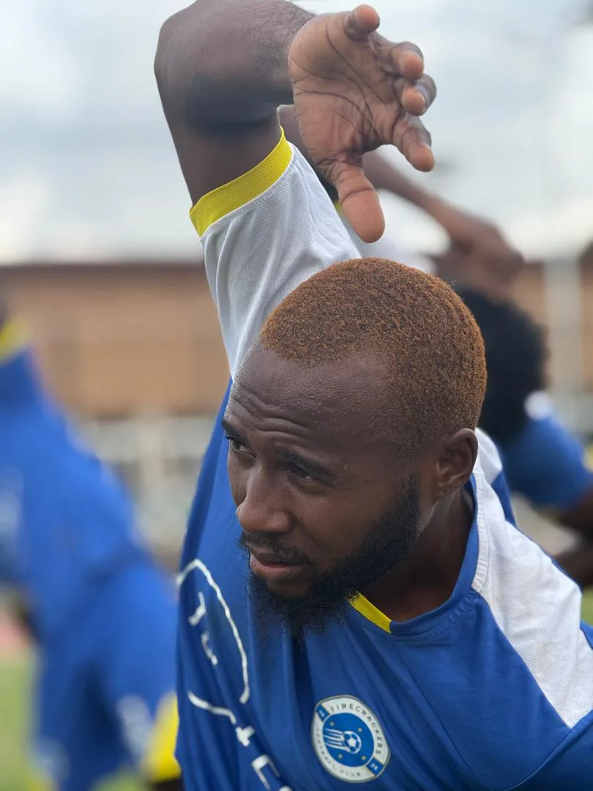

Football CV · 2025
Olusegun Adewole
aka “Shegx”
Active Winger · Team Captain
- Email adewoleolusegun123@gmail.com
- Phone +234 701 570 3790
- Address 37 Iseyin Street, Ijesha, Lawanson, Lagos
- Web shegx7.com

Active footballer and team captain with over a decade of experience in grassroots football. Currently captaining Firecrackers FC as a left/right winger (No. 7), with versatility across full-back and wing-back roles. Combines pace, two-footed ability, and on-pitch leadership.
LWF/RWF
Primary
RB/RWB/LWB
Alternate
5'8"
Height
65 kg
Weight
Right
Strong Foot
5
Trophies
Player Profile
- Nationality: Nigerian
- Date of Birth: 21 March 2004
- Gender: Male
- Languages: English, Yoruba
- Availability: Active · Open to trials & opportunities
Key Skills
Two-footed
Speed & positioning
Ball control
Off-the-ball movement
Pressing
Shot power & accuracy
Dribbling
Runs in behind
Anticipation
On-pitch leadership
Multi-position
Playing Experience
Firecrackers FC
Captain · Winger · No. 7
Current club. Leads the squad as captain from the wing, setting match-day standards and dressing-room culture.
- Team captain with responsibility for on-pitch communication and squad standards
- Primary winger operating wide on both flanks
- Big Sunday League winner (2025)
Synergy Ultimate Sports
Winger
Golden Stars FC
Winger / Full-back
Pharaoh's Academy
Attacking Player
- Pharaoh's Academy Player of the Month (May 2019)
Akoka FC
NHBC FC
Hornets FC
Tournaments & Competitions
- Big Sunday League, Winner (2025)
- Shanana Super Cup, Winner (2022)
- Energy Cup, Winner (2022)
- Pharaohs Cup, Winner (2019)
- Super Teens Cup, Winner (2016)
Awards
- Joint Top Scorer, Shanana Super Cup (2022)
- Player of the Month, Pharaoh's Academy (May 2019)
- Top Scorer, Super Teens Cup (2016)
- Player of the Tournament, Super Teens Cup (2016)
References
Available on request.